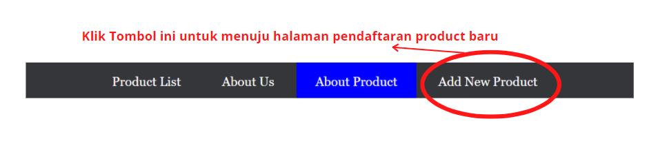

Product yang kami tawarkan pada toko daring kami berasal dari para penjual yang telah berkerja sama dengan kami dan dapat dipertanggungjawabkan pelayanannya. Kami juga melakukan inspeksi bulanan untuk mencegah penjualan barang yang dibawah standar yang telah ditentukan oleh kami.
Product yang kami tawarkan memiliki minimal garansi 2 minggu setelah penerimaan barang. Tergantung dengan barangnya ada barang yang memiliki garansi lebih dari 2 minggu hingga maksimal 2 tahun. Jika terjadi masalah atau sesuatu yang tidak diharapkan terjadi maka dapat menghubungi kami menggunakan data yang tercantum pada lembaran garansi saat penerimaan barang.
Product yang kami tawarkan akan dikirim sesuai dengan kemauan pembeli menggunakan sarana pengiriman yang kami sudah sediakan. Waktu pengantaran yang kami tawarkan ada beberapa seperti pengiriman secara langsung, hari yang sama, keesokan harinya, dan minggu ini. Untuk sarana yang kami sediakan berasal dari perusahaan jasa antar barang yang sudah terpecaya dan dapat dipertanggungjawabkan keamanan jasa pengirimannya dan dapat dilacak lokasi barang yang anda pesan.
Untuk menambahkan barang baru untuk dijual dapat menuju ke halaman Pendaftaran barang baru dengan mengklik tombol berikut:
Atau dengan mengikuti langkah sesuai gambar.
